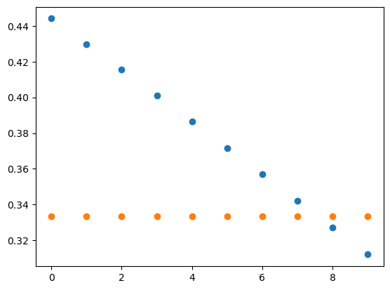

import numpy as np
import matplotlib.pyplot as plt 01wk-2: 파이썬은 좋은 계산기다 (1)

1. 강의영상
2. Imports
3. 파이썬은 좋은 계산기이다.
- 아주 어려운 연산도 척척해줌.
np.cos(np.pi) # 삼각함수의 값 계산-1.0np.mean(np.array([1,0,1])) # 평균을 계산0.6666666666666666- 변수저장 가능
\(x\)에 따라 아래의 값을 계산하고 싶다면?
- \(y=2x-5\)
- \(\frac{e^y}{1+e^y}\)
x = 2
y = 2*x -5
np.exp(y) / (1+np.exp(y))0.2689414213699951- 그림도 그려줌..
x = np.array([1,2,3,4,5])
y = x**2 - 2*x + 1
plt.plot(x,y,'o')4. 2024 수능 – 1,2,4,6,23

(풀이)
(24)**(1/3) * 3**(2/3)6.0
(풀이)
h = 0.0000001
def f(x):
return 2*x**3 - 5*x**2 + 3
(f(2+h)-f(2))/h4.000000721759989
(풀이)
a = 1
3*2-a, 2**2 + a(5, 5)
(풀이)
r = 0.5
an = np.array([(3/4)/(r**4),(3/4)/(r**3),(3/4)/(r**2),(3/4)/r,3/4])
Sn = np.cumsum(an)
Sn[3] - Sn[1], 3*an[3](4.5, 4.5)anarray([12. , 6. , 3. , 1.5 , 0.75])12+618
(풀이)
x = 0.0001
np.log(1+3*x)/np.log(1+5*x)0.6000599830054485. 2024 수능 - 3,7,24

(풀이)
theta = np.linspace(3/2*np.pi, 2*np.pi, 100)
plt.plot(theta,np.sin(-theta),label=r"$y=\sin(-\theta)$")
plt.plot(theta,np.sin(-theta)*0+1/3,'.',label=r"$y=\frac{1}{3}$")
plt.legend()plt.plot(np.sin(-theta),label=r"$y=\sin(-\theta)$")
plt.plot(np.sin(-theta)*0+1/3,'.',label=r"$y=\frac{1}{3}$")
plt.legend()plt.plot(np.sin(-theta)[70:80],'o')
plt.plot(np.sin(-theta)[70:80]*0+1/3,'o')
np.sin(-theta)[70:80] # 이중에서 0.33333... 에 가장 가까운것은 끝에서 두번째 array([0.44406661, 0.42979491, 0.41541501, 0.40093054, 0.38634513,
0.37166246, 0.35688622, 0.34202014, 0.32706796, 0.31203345])np.sin(-theta)[78] # 이 값이 0.3333에 가장 가까움0.32706796331742194theta[78] # 이것이 theta 값5.949986086344305np.tan(5.949986086344305) # 이게 답이다-0.34610336503441297-np.sqrt(2)/2, -np.sqrt(2)/4, -1/4, 1/4, np.sqrt(2)/4 # 보기와 비교하면???(-0.7071067811865476, -0.3535533905932738, -0.25, 0.25, 0.3535533905932738)
(풀이)
x=0
#def f(x):
# return (1/3)*x**3 - 2*x**2 -12*x +4
f = lambda x: (1/3)*x**3 - 2*x**2 -12*x +4x = np.linspace(-5,8,101)
plt.plot(x,f(x),'.')arr = np.array([1,2,33,-3,2,44])
np.argmax(arr)5np.argmax(f(x)), np.argmin(f(x))(23, 85)x[85]- x[23]8.06
(풀이)
t = np.linspace(1/100,1,100)
x = np.log(t**3+1)
y = np.sin(np.pi*t)plt.plot(x,y,'.')x[-1],y[-1] # 마지막점(0.6931471805599453, 1.2246467991473532e-16)x[-2],y[-2] # 마지막에서 두번째점(0.6781853078827329, 0.031410759078128236)(y[-2]-y[-1])/(x[-2]-x[-1]) -2.0993868719367015-1/3*np.pi, -2/3*np.pi, -np.pi, - 4/3*np.pi, -5/3*np.pi # 따라서 답은 2번(-1.0471975511965976,
-2.0943951023931953,
-3.141592653589793,
-4.1887902047863905,
-5.235987755982989)6. 파이썬 문법복습
A. 함수를 선언하는 두 가지 방법
- 방법1: def를 이용하는 방법
def f(x):
return x+1f(3)4- 방법2: lambda를 사용하는 방법
f = lambda x: x+1f(3)4B. list와 np.array의 차이점
- 리스트는 수학친화적이지 않다.
lst1 = [1,2,3]
lst2 = [-1, -2, -3]lst1+lst2[1, 2, 3, -1, -2, -3]- 넘파이는 수학친화적이다.
arr1 = np.array([1,2,3])
arr2 = np.array([-1, -2, -3])arr1+arr2array([0, 0, 0])C. 인덱스로 벡터의 원소를 뽑는 방법
x = [11,22,33,-22,-33,-44]- 첫번째 원소를 뽑고 싶다면?
x[0]11- 두번째 원소를 뽑고 싶다면?
x[1]22- 마지막 원소를 뽑고 싶다면?
x[5]-44x[-1]-44- 마지막에서 두번째 원소를 뽑고 싶다면?
x[4]-33x[-2]-33- index = 0,1,2 에 해당하는 원소만 추출
x[0:3] # 마지막 인덱스 3은 포함되지 않음 [11, 22, 33]- index = 2,3,4 에 해당하는 원소만 추출
x[2:5] # 2,3,4에 해당하는 인덱스만 추출[33, -22, -33]- x[0:3]와 같이 처음 시작점이 0인 경우 생략가능
x[:3] [11, 22, 33]- x[k:]와 같은 코드는 index=k에서 끝까지 뽑는다는 의미이다.
x[3:6] #3,4,5[-22, -33, -44]x[3:][-22, -33, -44]D. np.cumsum(), np.cumprod()
- 누적합
arr = np.array([1,-1,1,-1,1,-1])
arrarray([ 1, -1, 1, -1, 1, -1])np.cumsum(arr)array([1, 0, 1, 0, 1, 0])- 누적곱
arr = np.array([1,2,3,4])
arrarray([1, 2, 3, 4])np.cumprod(arr)array([ 1, 2, 6, 24])E. plt.plot()
- 예시1: \(x\)없이 그리기 (라인)
y=[2,3,5,2]
plt.plot(y)- 예시2: \(x\)없이 그리기 (점)
y=[2,3,5,2]
plt.plot(y,'o')- 예시3: \((x,y)\)를 전달하여 그리기(점)
x=[20,21,22,23]
y=[2,3,5,2]
plt.plot(x,y,'o')- 예시4: 겹쳐서 그리기
x=[20,21,22,23]
y1=[2,3,5,-2]
y2=[2.5 ,3.5 ,5.5 , -2.5]
plt.plot(x,y1,'--o')
plt.plot(x,y2,'--o')- 예시5: 겹쳐서 그리기 + 라벨
x=[20,21,22,23]
y1=[2,3,5,-2]
y2=[2.5 ,3.5 ,5.5 , -2.5]
plt.plot(x,y1,'--o',label="y1")
plt.plot(x,y2,'--o',label="y2")
plt.legend()- 예시5: 겹쳐서 그리기 + latex 라벨
x=[20,21,22,23]
y1=[2,3,5,-2]
y2=[2.5 ,3.5 ,5.5 , -2.5]
plt.plot(x,y1,'--o',label=r"$y_1$")
plt.plot(x,y2,'--o',label=r"$y_2$")
plt.legend()- latex수식은 이 수업에서 필수사항은 아님
- latex수식을 사용할 수 없어도 시험점수를 획득할때 아무런 불이익이 없음.
F. np.argmax, np.argmin
- 예시1
arr = np.array([1,2,3,2,1,0])
arrarray([1, 2, 3, 2, 1, 0])np.argmax(arr),np.argmin(arr)(2, 5)# 예제 – 두 함수의 교점
\(-1 \leq x \leq 3\) 에서
- \(f(x)=(x-1)^2\) 와
- \(g(x)=-2x+5\)
의 교점의 좌표를 구하여라.
(풀이)
x = np.linspace(-1,3,101)
f = (x-1)**2
g = -2*x+5
plt.plot(x,f,label=r"$f(x)=(x-1)^2$")
plt.plot(x,g,label=r"$g(x)=-2x+5$")
plt.legend()x[np.argmin(abs(f-g))]2.02,(2-1)**2(2, 1)- 이것이 교점의 좌표
7. 숙제
- \(x=3\)일때
\[\frac{e^x}{1+e^x}\]
값을 계산하는 코드를 작성하고 LMS에 제출하라.
.ipynb파일형태로 LMS에 제출할 것. (Quiz제출 연습용임. 제출방법이 익숙하지 않은 학생은 꼭 질문할것. 이 숙제는 제출하지 않아도 감점없음)